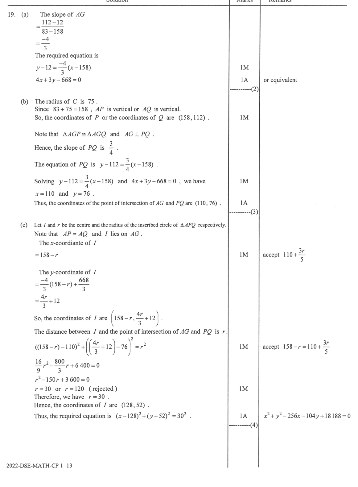

2022 DSE 數學 Paper 1 第 19 題 評卷參考＋詳解
題目（中文卷）
圓 $C$ 的圓心為點 $G(83,112)$ 。得知點 $A(158,12)$ 位於 $C$ 以外。$AP$ 及 $AQ$ 分別為 $C$ 在點 $P$ 及點 $Q$ 的切線。已知 $C$ 通過點 $(23,67)$ 。
(a) 求通過 $A$ 及 $G$ 的直線的方程。 (2 分)
(b) 求 $AG$ 與 $PQ$ 的交點的坐標。 (3 分)
(c) 求 $\triangle APQ$ 的內切圓的方程。 (4 分)
(d) 某人宣稱 $\triangle APQ$ 的內切圓的面積與外接圓的面積之比為 $1:4$ 。你是否同意？試解釋你的答案。 (3 分)
試卷完 —
English version（英文卷題目）
The centre of the circle ( C ) is the point ( G(83,112) ). It is found that the point ( A(158,12) ) lies outside ( C ). ( AP ) and ( AQ ) are the tangents to ( C ) at the points ( P ) and ( Q ) respectively. It is given that ( C ) passes through the point ( (23,67) ).
(a) Find the equation of the straight line passing through ( A ) and ( G ). (2 marks)
(b) Find the coordinates of the point of intersection of ( AG ) and ( PQ ). (3 marks)
(c) Find the equation of the inscribed circle of ( \triangle APQ ). (4 marks)
(d) Someone claims that the ratio of the area of the inscribed circle to the area of the circumcircle of ( \triangle APQ ) is ( 1:4 ). Do you agree? Explain your answer. (3 marks)
試卷完 —
官方評卷參考（Marking Scheme）

考評報告
良好。很多考生能求得通過A及G的直線的方程。部分考生誤以AG的垂直平分線的方程作為答案。甚差。大部分考生未有察覺AG垂直於PQ,因此他們未能求得AG與PQ的交點的坐標。甚差。大部分考生未能利用切線性質求得△APQ的內切圓的方程。甚差。大部分考生未有察覺AG為△APQ的外接圓的一直徑,因此他們未能求得△APQ的內切圓的面積與外接圓的面積之比。